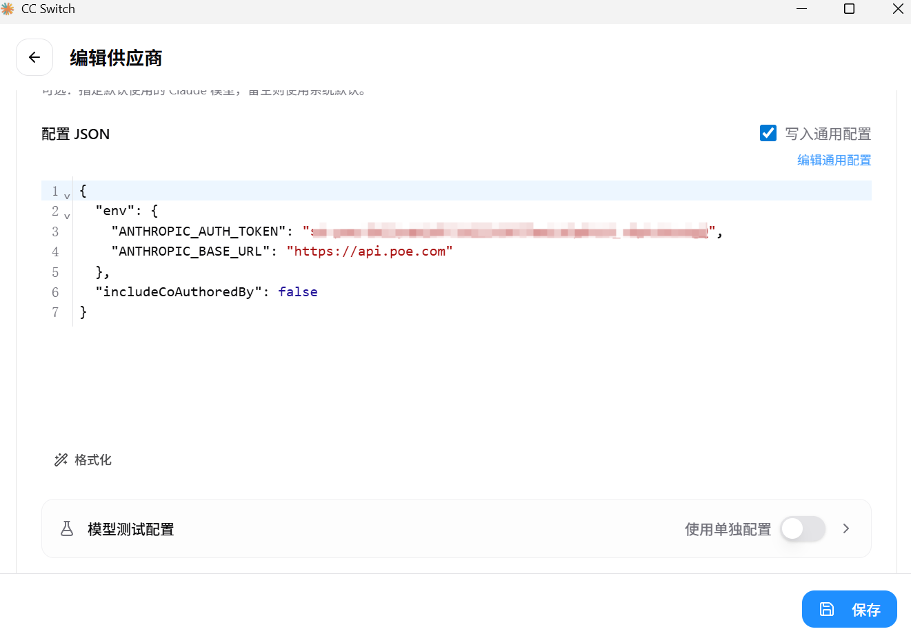
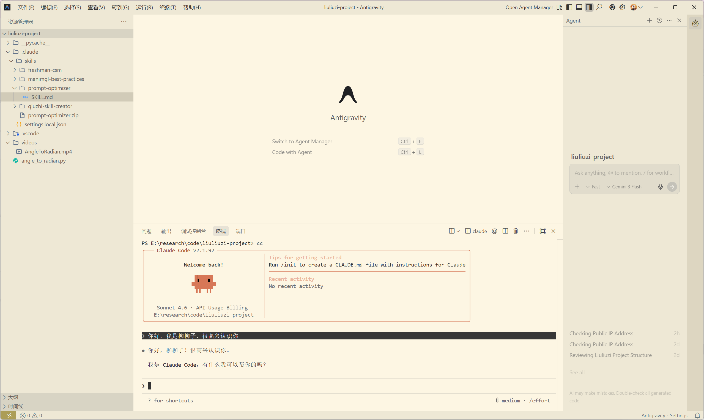

# Antigravity 安装
参考：知乎回答
基本官网安装没啥问题，卡在谷歌账号登录这一步
基于知乎教程，需要 IP + 账号双美国
- 博主的账号所属地在美国，没问题
- IP 问题，红迪老哥指出，win11 系统一定要用管理员方式运行 Clash！ 然后选择 TUN 虚拟网卡 + global 全局代理模式；不行就重启电脑清除缓存，再试一下
# Claude Code 安装
直接 cmd 运行：
irm https://claude.ai/install.ps1 | iex |
然后配置一下系统环境变量
# CC-Switch 安装调试
Anthropic 对 Claude 账号进行了严格的安全验证，必须使用手机号绑定，当然某神秘大国的 + 86 手机号没法注册，然而 Claude Code 必须 /login 才能使用。
为了避免去搞国外手机账号，这里万能的 Poe+CC-Switch 堂堂登场
关键步骤：
-
必须先添加一个官方供应商（即使没账号），否则可能出错。
-
参照 Poe 官网介绍，添加第三方供应商 Poe 要插入字段
export ANTHROPIC_BASE_URL="https://api.poe.com"
export ANTHROPIC_AUTH_TOKEN="$POE_API_KEY"
export ANTHROPIC_API_KEY="" # Important: Must be explicitly empty

注意踩坑点：不要在 json 中配置
"ANTHROPIC_API_KEY": ""，在 CC-Switch（基于 Node.js）的底层逻辑中，这会向系统注入一个值为空字符串的环境变量。 -
点击「启用」你想要的供应商。
-
回到 Antigravity 新建终端，输入
claude回车。 -
选择主题。
如果出现登录提示，说明配置未生效，请回到 Switch 重新切换供应商。
# 一直 TUN 好累
注意！这里反重力 IDE 和 Claude Code 两者都会对 IP 纯净有限制，所以我们要分别操作
# 反重力 proxy
参照 github 教程，去配置好即可，这里博主使用的是 clash verge rev，混合代理模式，port 为 7897，所以在 config.json 中设置 port 到 7897 即可：
"proxy": { | |
"type": "socks5", | |
"host": "127.0.0.1", | |
"port": 7897 | |
}, |
然后我即可在 Antigravity.exe 所在路径下找到 log 文件夹中的 log 文件：
[2026-04-06 16:26:29] [PID:42700][TID:41376] [信息] 代理隧道就绪: sock=2148, type=socks5, 代理=127.0.0.1:7897, 目标=daily-cloudcode-pa.googleapis.com:443 | |
[2026-04-06 16:26:30] [PID:42700][TID:37112] [信息] ConnectEx 正重定向 play.googleapis.com:443 到代理, sock=2156 | |
[2026-04-06 16:26:30] [PID:42700][TID:27088] [信息] SOCKS5: 隧道建立成功, sock=2156, 目标=play.googleapis.com:443, BND.ATYP=1, BND.PORT=7897 |
询问 AI，确认说明已经将流量转发到 7898 端口
在 powershell 测试 7897 端口的 IP 信息：
今日 2026.4.4，对于代码指令问题，claude 真的比 gemini 强好多，亲测
curl.exe --proxy http://127.0.0.1:7897 http://ip-api.com/json |
得到回答：
Windows PowerShell | |
版权所有（C） Microsoft Corporation。保留所有权利。 | |
安装最新的 PowerShell，了解新功能和改进！https://aka.ms/PSWindows | |
PS C:\Users\liu> curl.exe --proxy http://127.0.0.1:7897 http://ip-api.com/json | |
{"status":"success","country":"United States","countryCode":"US","region":"CA","regionName":"California","city":"San Jose","zip":"95025","lat":37.3388,"lon":-121.8916,"timezone":"America/Los_Angeles","isp":"Eons Data Communications Limited","org":"metropolis networks inc","as":"AS138997 Eons Data Communications Limited","query":"65.75.223.52"} | |
PS C:\Users\liu> |
谢邀，已在美国，嘻嘻
# Claude Code 代理
Claude Code 是基于 Node.js 运行的。Node.js 这个底层环境有一个众所周知的 “毛病”：它对 SOCKS5 代理的支持非常差劲。所以代理端口最好要支持 HTTP 协议。
按理说，我们在 cmd 中输入 claude 指令前，输入一行指令即可：
set HTTPS_PROXY=http://127.0.0.1:7897 |
该指令告诉当前这个 CMD 窗口：“接下来，如果有任何程序想要发送 HTTPS 网络请求（比如去连 Poe 的服务器），请不要直接走大门（直连），而是把数据交给 127.0.0.1:7897 （代理软件）。”
Claude Code 底层是 Node.js 写的，Node.js 天生就认识并且会听从 HTTPS_PROXY 这个 “路牌” 的指挥。
想更简便的话，也可以这样：
- 我在
D:\program\claude-code-proxy路径下编写了一个cc.bat文件（你们自己找个文件夹路径）：
@echo off | |
set HTTPS_PROXY=http://127.0.0.1:7897 | |
claude %* |
- 然后是环境路径配置：
在按下 Win + R ，输入 sysdm.cpl 并回车，点击 高级——>环境变量 ，在上半部分的 **“用户变量”** 框里，找到 Path 变量，双击它，“新建” 刚才那个文件夹的路径： D:\program\claude-code-proxy 。一路点击 “确定” ，重启终端。
以后不需要输入 claude 指令了，输入 cc 即可。
# 总结 & 效果

# 写一个 Skill？
可以详见 b 站教程